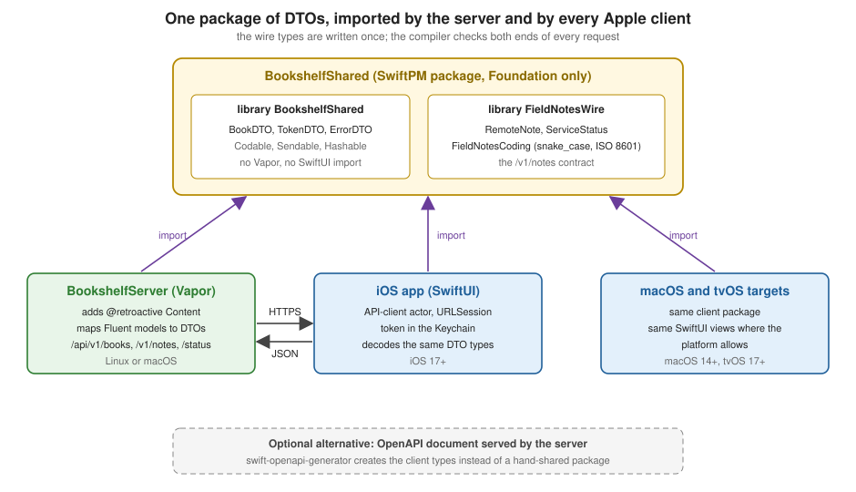

Full-Stack Swift with iOS Clients
|
This content was generated with the assistance of AI and should be verified against the official documentation before being relied on in production. |
This page is written against Vapor 4.122.2 on Swift 6.4 (every package builds in the Swift 6 language mode; the server
uses tools version 6.3 like the official template, Vapor 4.122.2 itself needs 6.0), with fluent 4.13.0,
fluent-sqlite-driver 4.9.0, swift-nio 2.104.0 and, for the Apple checks, app-store-server-library-swift 6.0.0, checked
on 2026-10-17. The server, the shared package and the client are three scratch SwiftPM packages. Every Swift listing on
this page was compiled with zero warnings; the server is covered by a VaporTesting suite of 12 tests that passed
(including one that opens a real socket and reads the change stream with URLSession), the client was run against the
running server, and the curl output shown was captured from that server. The Apple checks were compiled and tested for
their error paths only: nothing here was run against Apple’s servers, with a real signed notification or with a real App
Attest attestation, and nothing was run on a physical device or in Xcode, so the Xcode build settings in the
running-side-by-side section are the documented ones, not output from this environment. Vapor 5 is at 5.0.0-beta.4 and
is not released yet; where it matters, that is noted.
The page extends the Bookshelf service of the earlier pages of this section and implements the server side of the FieldNotes sync contract that the Apple Platforms section describes from the client’s point of view, in Networking: URLSession, Network Framework and ATS. The Swift language features used here are in the Swift Reference: Codable and Serialization, Async/Await and Tasks and Actors, Isolation and Sendable. Every user, email, token, ID and key in the listings and in the captured output is a throwaway value that existed only while the scratch process ran. Real deployments read secrets from the environment and never log tokens.
What "full stack" buys in Swift
A web stack usually has a language boundary in the middle: the server is written in one language and the app in another, and a JSON document is the only thing they have in common. Every field exists twice, in two type systems, and nothing checks that the two copies agree until a user finds the difference. With Vapor and an Apple client the boundary disappears for the data model:
-
One definition of each wire type. A
Codable,Sendablestruct lives in a SwiftPM package. The server imports it to decode requests and encode responses; the iOS, macOS and tvOS apps import the same package to do the opposite. Renaming a field breaks the build on both sides in the same commit. -
One concurrency model.
async/await, actors andSendableare the same on the event loops and on the main actor, so the client’s API-client actor and the server’s change hub are the same kind of code. -
One toolchain. SwiftPM builds all three packages,
swift testand Swift Testing run on both sides, and Xcode opens the server and the app in one workspace.
What is not shared matters as much. The persistence models stay apart: the server has Fluent models (Book,
FieldNote), the app has SwiftData models. The DTO is the contract between them, which keeps database columns, password
hashes and internal state out of the client, and keeps SwiftUI and Fluent out of each other’s dependency graph. Business
rules that only the server may decide (who can create books, which conflicts win) stay in the server.

The alternative is a contract-first design: the server publishes an OpenAPI document and each client generates its types with swift-openapi-generator. That suits teams where the clients are not all Swift, or where the server and the apps live in different repositories with different release cycles. When the server and every client are Swift and move together, a shared package is less machinery. This page uses the shared package; the OpenAPI route (see the OpenAPI with swift-openapi-generator page) is the box at the bottom of the figure. The API Design, Versioning and DTOs page covers how to design and version the DTOs themselves.
The shared package
BookshelfShared is a SwiftPM package with two library products. It depends on nothing but Foundation, so it builds on
every platform the clients and the server run on:
// BookshelfShared/Package.swift
// swift-tools-version:6.0
import PackageDescription
let package = Package(
name: "BookshelfShared",
platforms: [.macOS(.v14), .iOS(.v17), .tvOS(.v17), .watchOS(.v10), .visionOS(.v1)],
products: [
.library(name: "BookshelfShared", targets: ["BookshelfShared"]),
.library(name: "FieldNotesWire", targets: ["FieldNotesWire"]),
],
targets: [
// Foundation only: no Vapor, no UIKit/SwiftUI, so every platform can import it.
.target(name: "BookshelfShared"),
.target(name: "FieldNotesWire"),
.testTarget(name: "FieldNotesWireTests", dependencies: ["FieldNotesWire"]),
]
)Source: SwiftPM documentation
Two products rather than one keep contracts apart: BookshelfShared is the Bookshelf API, FieldNotesWire is the
FieldNotes contract, and a client that only syncs notes does not link the book types. The rules that keep a shared
package healthy:
-
Foundation only. No
import Vapor, noimport SwiftUI, no Fluent. The moment the package imports Vapor, the iOS app links a web framework; the moment it imports SwiftUI, the server stops building on Linux. -
Plain data. Structs with
let/varstored properties,Codable,Sendable, usuallyHashable. Every stored property isSendable, so the compiler proves the types are safe to pass between the event loops, actors and the main actor without@unchecked. -
publiceverything, including the initialisers. Apublic structgets only aninternalmemberwise initialiser, so the importing module cannot construct it until the package declarespublic init. -
Versioned like any library. A change to a field is a change to the API of every client in the field, because old app versions keep running for years. Adding an optional field is compatible; renaming or removing one is not. In production the package is a tagged remote dependency (
from: "1.2.0"); the scratch packages here use.package(path: "../BookshelfShared")so a change is visible at once.
// BookshelfShared/Sources/BookshelfShared/DTOs.swift
import Foundation
/// What `GET /api/v1/books/:id` returns and `POST /api/v1/books` accepts.
public struct BookDTO: Codable, Hashable, Sendable, Identifiable {
public var id: UUID?
public var title: String
public var isbn: String
public var publishedYear: Int
public var priceCents: Int
public var authorID: UUID
public init(id: UUID? = nil, title: String, isbn: String, publishedYear: Int, priceCents: Int, authorID: UUID) {
self.id = id
self.title = title
self.isbn = isbn
self.publishedYear = publishedYear
self.priceCents = priceCents
self.authorID = authorID
}
}
/// The body of `POST /api/v1/auth/token` is empty (Basic credentials travel in the header); this is what comes back.
public struct TokenDTO: Codable, Hashable, Sendable {
public var token: String
public var expiresAt: Date
public init(token: String, expiresAt: Date) {
self.token = token
self.expiresAt = expiresAt
}
}
/// The error body every Vapor `Abort` produces, shared so clients decode it with the same type the server encodes.
public struct ErrorDTO: Codable, Hashable, Sendable {
public var error: Bool
public var reason: String
public init(error: Bool = true, reason: String) {
self.error = error
self.reason = reason
}
}ErrorDTO is the shape Vapor’s ErrorMiddleware gives every Abort, {"error":true,"reason":"..."}; sharing it
lets the client decode a failure with the type the server effectively encodes. TokenDTO mirrors the IssuedToken
struct of the Fluent authentication and API tokens page, which
the server keeps private because it is only the server’s response type.
The FieldNotes contract has its own library, because it is defined by the client page rather than designed here:
// BookshelfShared/Sources/FieldNotesWire/RemoteNote.swift
import Foundation
public struct NoteLocation: Hashable, Sendable, Codable {
public var latitude: Double
public var longitude: Double
public var placeName: String?
public init(latitude: Double, longitude: Double, placeName: String? = nil) {
self.latitude = latitude
self.longitude = longitude
self.placeName = placeName
}
}
/// One note as it travels over the wire. Keys are camelCase here; the snake_case spelling is a coder setting.
public struct RemoteNote: Codable, Sendable, Identifiable, Hashable {
public var id: UUID
public var title: String
public var body: String
public var createdAt: Date
public var updatedAt: Date
public var notebookID: UUID?
public var tags: [String]
public var isPinned: Bool
public var location: NoteLocation?
// `notebookID` needs an explicit raw value: convertFromSnakeCase turns "notebook_id" into "notebookId", not "notebookID".
private enum CodingKeys: String, CodingKey {
case id, title, body, createdAt, updatedAt, tags, isPinned, location
case notebookID = "notebookId"
}
public init(id: UUID, title: String, body: String, createdAt: Date, updatedAt: Date,
notebookID: UUID? = nil, tags: [String] = [], isPinned: Bool = false, location: NoteLocation? = nil) {
self.id = id
self.title = title
self.body = body
self.createdAt = createdAt
self.updatedAt = updatedAt
self.notebookID = notebookID
self.tags = tags
self.isPinned = isPinned
self.location = location
}
}
public struct ServiceStatus: Codable, Sendable, Hashable {
public var isAvailable: Bool
public var message: String?
public init(isAvailable: Bool, message: String? = nil) {
self.isAvailable = isAvailable
self.message = message
}
}
/// The two coders every FieldNotes client and the server must agree on.
public enum FieldNotesCoding {
public static func makeEncoder() -> JSONEncoder {
let encoder = JSONEncoder()
encoder.keyEncodingStrategy = .convertToSnakeCase
encoder.dateEncodingStrategy = .iso8601
return encoder
}
public static func makeDecoder() -> JSONDecoder {
let decoder = JSONDecoder()
decoder.keyDecodingStrategy = .convertFromSnakeCase
decoder.dateDecodingStrategy = .iso8601
return decoder
}
}FieldNotesCoding is the other half of the contract: the coder settings are part of the wire format. The FieldNotes
server speaks snake_case keys and ISO 8601 dates without fractional seconds, which is exactly what NotesAPIClient in
the Apple page configures on its own encoder and decoder. Putting the two factory functions in the shared package means
the server cannot drift from them.
A trap lives in that file. convertFromSnakeCase turns notebook_id into notebookId, not notebookID, so a property
named notebookID is never found and, because it is optional, decodes to nil with no error:
struct A: Codable { var notebookID: UUID?; var isPinned: Bool }
// decoder.keyDecodingStrategy = .convertFromSnakeCase
// {"notebook_id":"6F1D1C9E-1111-4A3B-9C2D-0A1B2C3D4E5F","is_pinned":true}
// decodes to: A(notebookID: nil, isPinned: true)The fix in RemoteNote is the explicit CodingKeys with case notebookID = "notebookId": the decoder converts the
incoming key to notebookId before matching, and the encoder converts notebookId back to notebook_id, so one raw
value serves both directions. The same applies to every property with an acronym in its name (userID, imageURL).
Both pages use these keys: the RemoteNote on the Apple networking page declares the
same case notebookID = "notebookId", so the client and the server read and write the notebook identically. A type
that drops the explicit CodingKeys silently loses the notebook of every note it downloads.
The server side of shared types
The server depends on both libraries and on the three Vapor packages it needs:
// Server/Package.swift
// swift-tools-version:6.3
import PackageDescription
let package = Package(
name: "BookshelfServer",
platforms: [.macOS(.v14)],
dependencies: [
.package(url: "https://github.com/vapor/vapor.git", exact: "4.122.2"),
.package(url: "https://github.com/vapor/fluent.git", exact: "4.13.0"),
.package(url: "https://github.com/vapor/fluent-sqlite-driver.git", exact: "4.9.0"),
.package(url: "https://github.com/vapor/fluent-postgres-driver.git", exact: "2.14.0"),
.package(url: "https://github.com/apple/swift-nio.git", from: "2.101.0"),
.package(path: "../BookshelfShared"),
],
targets: [
.executableTarget(name: "App", dependencies: [
.product(name: "Vapor", package: "vapor"),
.product(name: "Fluent", package: "fluent"),
.product(name: "FluentSQLiteDriver", package: "fluent-sqlite-driver"),
.product(name: "FluentPostgresDriver", package: "fluent-postgres-driver"),
.product(name: "_NIOFileSystem", package: "swift-nio"),
.product(name: "BookshelfShared", package: "BookshelfShared"),
.product(name: "FieldNotesWire", package: "BookshelfShared"),
], swiftSettings: swiftSettings),
.testTarget(name: "AppTests", dependencies: [
.target(name: "App"),
.product(name: "VaporTesting", package: "vapor"),
], swiftSettings: swiftSettings),
]
)
var swiftSettings: [SwiftSetting] { [
.enableUpcomingFeature("ExistentialAny"),
.enableUpcomingFeature("InternalImportsByDefault"),
.enableUpcomingFeature("MemberImportVisibility"),
.enableUpcomingFeature("InferIsolatedConformances"),
.enableUpcomingFeature("ImmutableWeakCaptures"),
] }Source: vapor/template: Package.swift
_NIOFileSystem is the NIO module the attachments code uses to stream files; it is the same dependency as on the
File uploads and streaming page. The upcoming-feature flags are the
template’s. With InternalImportsByDefault every import is internal unless written otherwise, which matters in the
next listing.
A DTO from the shared package cannot conform to Vapor’s Content inside that package, because the package must not
import Vapor. The server adds the conformance itself, as a retroactive conformance: a protocol from one module on a
type from another, which the compiler flags unless it is spelled @retroactive:
// Server/Sources/App/BooksRoutes.swift
import BookshelfShared
import Fluent
public import Vapor
// BookDTO lives in a package that does not import Vapor, so the server adds the Content conformance itself.
extension BookDTO: @retroactive Content {}
extension Book {
convenience init(_ dto: BookDTO) {
self.init(title: dto.title, isbn: dto.isbn, publishedYear: dto.publishedYear, priceCents: dto.priceCents,
status: .draft, authorID: dto.authorID)
}
func toDTO() -> BookDTO {
BookDTO(id: id, title: title, isbn: isbn, publishedYear: publishedYear, priceCents: priceCents, authorID: $author.id)
}
}
struct BooksController: RouteCollection {
func boot(routes: any RoutesBuilder) throws {
let books = routes.grouped("api", "v1", "books")
.grouped(HashedTokenAuthenticator())
.grouped(UserToken.guardMiddleware(throwing: Abort(
.unauthorized,
headers: ["WWW-Authenticate": "Bearer realm=\"bookshelf\""],
reason: "Missing, expired or revoked token."
)))
books.get(use: index)
books.post(use: create)
}
@Sendable func index(req: Request) async throws -> [BookDTO] {
try await Book.query(on: req.db).filter(\.$status == .published).sort(\.$title).all().map { $0.toDTO() }
}
/// Only librarians and admins create books; the status is never taken from the client.
@Sendable func create(req: Request) async throws -> Response {
guard try req.auth.require(User.self).role != .reader else { throw Abort(.forbidden) }
let book = Book(try req.content.decode(BookDTO.self))
try await book.save(on: req.db)
return try await book.toDTO().encodeResponse(status: .created, for: req)
}
}Source: Vapor docs: Content
The details worth knowing:
-
extension BookDTO: @retroactive Content {}is allContentneeds, becauseBookDTOis alreadyCodableand the protocol’s encode and decode methods have default implementations. The warning that@retroactivesilences is real: if the shared package ever adds its ownContentconformance (or another package adds a different one), the two collide. Keep the conformance in one place, the server. -
The file starts with
public import Vapor. WithInternalImportsByDefault, a plainimport Vaporwould make the conformancepublicwhile its protocol is only imported internally, which the compiler rejects with "cannot use protocol 'Content' in a public or '@usableFromInline' conformance".public importis a Swift 6 access-level import and is only needed in this one file. -
Mapping between the Fluent model and the DTO is explicit (
toDTO()andinit(_ dto:)). The status of a new book is never taken from the client, andcreatechecks the role first: a reader receives403, a librarian creates a draft. The page on authorization covers role checks in depth. -
The routes reuse
HashedTokenAuthenticatorandUserTokenfrom the Fluent Authentication and API Tokens page, so a token issued byPOST /api/v1/auth/tokenworks for both Bookshelf and FieldNotes.
Vapor’s own Content coders use camelCase keys and ISO 8601 dates, which is what TokenDTO and BookDTO use; only the
FieldNotes routes switch to the snake_case coder, per request (below). Content negotiation and per-route coders are on
the Content and Codable page.
The client: an actor, async URLSession and the Keychain
The client side is a second SwiftPM package that any app target imports. Its manifest names every platform it supports:
// Client/Package.swift
// swift-tools-version:6.0
import PackageDescription
let package = Package(
name: "BookshelfClient",
platforms: [.iOS(.v17), .macOS(.v14), .tvOS(.v17)],
products: [.library(name: "BookshelfClient", targets: ["BookshelfClient"])],
dependencies: [.package(path: "../BookshelfShared")],
targets: [
.target(name: "BookshelfClient", dependencies: [
.product(name: "BookshelfShared", package: "BookshelfShared"),
], swiftSettings: [.enableUpcomingFeature("ExistentialAny")]),
.executableTarget(name: "ClientSmoke", dependencies: ["BookshelfClient"]),
]
)The ClientSmoke executable is only the scratch harness used to run the client against the server; an app target
depends on the BookshelfClient library alone.
The token lives in the Keychain, behind a small protocol so tests and previews can use memory:
// Client/Sources/BookshelfClient/TokenStore.swift
import Foundation
import Security
public protocol TokenStore: Sendable {
func load() async throws -> String?
func save(_ token: String) async throws
func delete() async throws
}
public struct KeychainError: Error, Sendable {
public let status: OSStatus
}
/// The access token lives in the Keychain, never in UserDefaults or a file.
public struct KeychainTokenStore: TokenStore {
private let service: String
private let account: String
public init(service: String = "com.example.bookshelf", account: String = "access-token") {
self.service = service
self.account = account
}
private var identity: [String: Any] {
[kSecClass as String: kSecClassGenericPassword,
kSecAttrService as String: service,
kSecAttrAccount as String: account]
}
public func load() async throws -> String? {
var query = identity
query[kSecReturnData as String] = true
query[kSecMatchLimit as String] = kSecMatchLimitOne
var item: CFTypeRef?
switch SecItemCopyMatching(query as CFDictionary, &item) {
case errSecSuccess: return (item as? Data).flatMap { String(data: $0, encoding: .utf8) }
case errSecItemNotFound: return nil
case let status: throw KeychainError(status: status)
}
}
public func save(_ token: String) async throws {
try await delete()
var attributes = identity
attributes[kSecValueData as String] = Data(token.utf8)
// Readable after the first unlock so a background sync can authenticate; never copied to another device.
attributes[kSecAttrAccessible as String] = kSecAttrAccessibleAfterFirstUnlockThisDeviceOnly
let status = SecItemAdd(attributes as CFDictionary, nil)
guard status == errSecSuccess else { throw KeychainError(status: status) }
}
public func delete() async throws {
let status = SecItemDelete(identity as CFDictionary)
guard status == errSecSuccess || status == errSecItemNotFound else { throw KeychainError(status: status) }
}
}
/// For previews and tests.
public actor InMemoryTokenStore: TokenStore {
private var token: String?
public init(token: String? = nil) { self.token = token }
public func load() async throws -> String? { token }
public func save(_ token: String) async throws { self.token = token }
public func delete() async throws { token = nil }
}kSecAttrAccessibleAfterFirstUnlockThisDeviceOnly lets a background URLSession task or a push-triggered sync
authenticate while the device is locked, and keeps the item out of backups and device-to-device transfers. A token that
is only needed while the app is in the foreground can use kSecAttrAccessibleWhenUnlockedThisDeviceOnly. The Keychain
items, access groups and biometric protection are covered on the Apple page
Security and Privacy.
The API client is an actor that asks the token store for a token on every request and never keeps one in a property:
// Client/Sources/BookshelfClient/BookshelfAPIClient.swift
import BookshelfShared
import Foundation
public enum APIError: Error, Sendable, Equatable {
case invalidResponse
case unauthorized // 401: the stored token is gone, sign in again
case server(status: Int, reason: String)
}
public enum Servers {
/// Debug builds talk to the server running on the Mac (the simulator shares the Mac's network).
public static var baseURL: URL {
#if DEBUG
URL(string: "http://localhost:8080")!
#else
URL(string: "https://api.bookshelf.example.com")!
#endif
}
}
public actor BookshelfAPIClient {
private let baseURL: URL
private let session: URLSession
private let tokens: any TokenStore
private let decoder: JSONDecoder
private let encoder: JSONEncoder
public init(baseURL: URL = Servers.baseURL, session: URLSession = .shared, tokens: any TokenStore) {
self.baseURL = baseURL
self.session = session
self.tokens = tokens
decoder = JSONDecoder()
decoder.dateDecodingStrategy = .iso8601
encoder = JSONEncoder()
encoder.dateEncodingStrategy = .iso8601
}
/// POST /api/v1/auth/token with HTTP Basic credentials; stores the token it gets back.
public func signIn(email: String, password: String) async throws {
var request = URLRequest(url: baseURL.appending(path: "api/v1/auth/token"))
request.httpMethod = "POST"
let credentials = Data("\(email):\(password)".utf8).base64EncodedString()
request.setValue("Basic \(credentials)", forHTTPHeaderField: "Authorization")
let data = try await perform(request, authorized: false)
try await tokens.save(try decoder.decode(TokenDTO.self, from: data).token)
}
public func signOut() async throws {
try await tokens.delete()
}
public func books() async throws -> [BookDTO] {
let data = try await perform(URLRequest(url: baseURL.appending(path: "api/v1/books")))
return try decoder.decode([BookDTO].self, from: data)
}
public func create(_ book: BookDTO) async throws -> BookDTO {
var request = URLRequest(url: baseURL.appending(path: "api/v1/books"))
request.httpMethod = "POST"
request.setValue("application/json", forHTTPHeaderField: "Content-Type")
request.httpBody = try encoder.encode(book)
return try decoder.decode(BookDTO.self, from: try await perform(request))
}
private func perform(_ request: URLRequest, authorized: Bool = true) async throws -> Data {
var request = request
request.setValue("application/json", forHTTPHeaderField: "Accept")
if authorized {
guard let token = try await tokens.load() else { throw APIError.unauthorized }
request.setValue("Bearer \(token)", forHTTPHeaderField: "Authorization")
}
let (data, response) = try await session.data(for: request) // throws only when no response arrives
guard let http = response as? HTTPURLResponse else { throw APIError.invalidResponse }
switch http.statusCode {
case 200..<300:
return data
case 401 where authorized:
try await tokens.delete()
throw APIError.unauthorized
default:
// The server's error body is the same ErrorDTO type the server encodes.
let reason = (try? decoder.decode(ErrorDTO.self, from: data))?.reason ?? "HTTP \(http.statusCode)"
throw APIError.server(status: http.statusCode, reason: reason)
}
}
}-
session.data(for:)throws only when no response arrives. A404or a500is a successful transfer, so every call goes through the status switch. This is the same rule the networking page states for FieldNotes. -
A
401deletes the stored token, so the app’s next step is a sign-in screen rather than a loop of failing requests. The server’sWWW-Authenticate: Bearerheader is the signal Vapor’s guard middleware sends. -
ErrorDTOis decoded with the shared type, so the message a person sees is thereasonthe server chose, not a generic "HTTP 403". -
Servers.baseURLis the only place that differs between builds. Debug points athttp://localhost:8080, the address ofswift runon the same Mac; release points at the HTTPS API. Hard-coding it is fine for one app; larger apps read it from an xcconfig through the Info.plist. -
Concurrency. The actor is
Sendable, so a@MainActorview model can hold it and await its methods from the main actor, while theURLSessionwork happens off it. Cancellation propagates: when SwiftUI cancels the.taskof a view that went away, the pendingdata(for:)throwsCancellationErrororURLError(.cancelled).
A SwiftUI view model and list sit on top. The model is @MainActor and @Observable, so SwiftUI redraws when books
or errorMessage change:
// Client/Sources/BookshelfClient/BooksView.swift
import BookshelfShared
import SwiftUI
@MainActor @Observable
public final class BooksModel {
public private(set) var books: [BookDTO] = []
public private(set) var errorMessage: String?
private let client: BookshelfAPIClient
public init(client: BookshelfAPIClient) { self.client = client }
public func load() async {
do {
books = try await client.books()
errorMessage = nil
} catch is CancellationError {
// The view went away: not a failure.
} catch {
errorMessage = String(describing: error)
}
}
}
public struct BooksView: View {
@State private var model: BooksModel
public init(client: BookshelfAPIClient) { _model = State(initialValue: BooksModel(client: client)) }
public var body: some View {
List(model.books) { book in
VStack(alignment: .leading) {
Text(book.title).font(.headline)
Text("\(book.publishedYear) · ISBN \(book.isbn)").font(.caption).foregroundStyle(.secondary)
}
}
.overlay { if let message = model.errorMessage { ContentUnavailableView("Could not load", systemImage: "wifi.slash", description: Text(message)) } }
.task { await model.load() }
.refreshable { await model.load() }
}
}.task starts the load when the view appears and cancels it when it disappears; .refreshable gives pull-to-refresh on
iOS and a refresh gesture on other platforms. CancellationError is deliberately not shown to the person. More on
structuring SwiftUI apps is on App Architecture the Apple Way.
Running the scratch executable against the live server shows the whole path, including the 401 handling and the 403
for a reader (the user was registered with curl first):
before sign-in: unauthorized
books after sign-in: []
create as reader: server(status: 403, reason: "Forbidden")
after sign-out: unauthorizedThe empty list is correct: no book was published. The 403 reason is Vapor’s default for an Abort(.forbidden) without
a reason.
Running the app and the server side by side in Xcode
The server is a package, and Xcode opens a package directly (File > Open on the folder or its Package.swift). To
debug both at once, put the app project and the server package in one workspace:
Bookshelf.xcworkspace
├── BookshelfApp/ the iOS, macOS and tvOS app project (Bookshelf.xcodeproj)
├── Packages/
│ ├── BookshelfShared/ the shared DTOs
│ └── BookshelfClient/ the API client and the SwiftUI views
└── BookshelfServer/ the Vapor package (Package.swift)In the workspace, the App scheme of the server package runs serve: edit the scheme, Run > Arguments, and set
serve --hostname 127.0.0.1 --port 8080 as the arguments and any variables (DATABASE_URL, LOG_LEVEL) under
Environment Variables. Choose the server scheme, run it, then switch to the app scheme and run that: the two processes
are separate, each with its own breakpoints and console, and Xcode’s debugger can be attached to both. A breakpoint in
FieldNotesController.put fires when the simulator app syncs. The shared package is edited in place, so a change to a
DTO rebuilds both targets.
Where the server is reachable from:
| The app runs on | Base URL for Debug builds |
|---|---|
iOS Simulator, macOS app, tvOS Simulator |
|
A physical iPhone or Apple TV on the same network |
|
A teammate’s or CI device |
An HTTPS URL on a development host or a tunnel. Do not open a development server to the internet over plain HTTP. |
App Transport Security blocks plain http:// for apps by default
(URLError.appTransportSecurityRequiresSecureConnection). The narrowest exception for a development server on the local
network is NSAllowsLocalNetworking, which relaxes ATS for local addresses and .local names only and leaves every
other domain protected. It belongs in Debug builds only. One way is a second Info.plist file chosen per configuration
in an xcconfig:
// Config/Debug.xcconfig
INFOPLIST_FILE = Bookshelf/Info-Debug.plist
// Config/Release.xcconfig
INFOPLIST_FILE = Bookshelf/Info.plist<!-- Bookshelf/Info-Debug.plist (excerpt): everything of Info.plist plus this key -->
<key>NSAppTransportSecurity</key>
<dict>
<key>NSAllowsLocalNetworking</key>
<true/>
</dict>Add a release-time check so the exception cannot ship: after archiving, plutil -extract NSAppTransportSecurity xml1
-o - Bookshelf.app/Info.plist must report that the key does not exist. Never use NSAllowsArbitraryLoads: it turns ATS
off for every domain, and App Store review asks for a justification. If a physical device must reach a development
server over HTTPS, run the server with a local certificate (for example one created by a local certificate tool and
installed as a trusted profile on the device) instead of relaxing ATS. The ATS keys, NSAllowsLocalNetworking and
nscurl --ats-diagnostics are on the Apple networking page, and a macOS app also needs the Outgoing Connections
(Client) sandbox entitlement.
A macOS command-line tool such as ClientSmoke is not an app with an Info.plist and is not subject to ATS, which is why
the scratch run above reached http://127.0.0.1:8089 without an exception; it says nothing about how an app target
behaves.
One client package, several Apple targets
The client package declares .iOS(.v17), .macOS(.v14) and .tvOS(.v17), so the same BookshelfAPIClient,
KeychainTokenStore and BooksView compile for all three; the scratch package was built for macOS here, and the iOS
and tvOS builds were not run. In Xcode, the app project has one target per platform (or one multiplatform target with
several supported destinations), each depending on BookshelfClient and BookshelfShared:
-
Shared in the package: the DTOs, the API client, the token store, the view models and every SwiftUI view whose layout works on all platforms.
-
Per target: the app entry point (
@main App), navigation shell (a tab bar on iOS, a sidebar on macOS, a focus-driven layout on tvOS), assets, entitlements and Info.plist. -
Behind
#if os(...): APIs that exist on one platform only (UIKiton iOS and tvOS,AppKiton macOS). A#if os(tvOS)block belongs in the app target, not in the package, where possible.
tvOS differs in three ways that touch this page. A tvOS app has very little persistent local storage and the system may purge its caches, so a tvOS app that syncs should treat the server as the source of truth; focus-based navigation replaces touch; and sign-in with a keyboard is awkward, so a device-flow login (the user approves on a phone) is the usual design. Multiplatform project structure is on Multiplatform Projects, and splitting an app into local packages on Swift Packages and Modularization.
Implementing the FieldNotes sync contract
The FieldNotes app keeps its notes on the device and syncs them with a small REST service. The contract is whatever
NotesAPIClient in the Apple page calls. This section is the server for it:
| Request | What the client does with it | What this server does |
|---|---|---|
|
Settings screen: is the service up? No token, no retries. |
|
|
Pull: the notes changed since the last sync. |
The caller’s notes whose server timestamp is at or after |
|
Push: a batch of changed notes, retried automatically. |
Creates or replaces up to 100 notes in one transaction. Idempotent. |
|
Keeps a connection open and applies each line the moment it arrives. |
NDJSON (a sibling of the Server-Sent Events page): the backlog since |
|
Downloads a photo, in a background session that can resume. |
The file with |
|
(Upload, not shown on the client page.) |
Streams the body to disk, idempotent per id. |
|
|
Both carry |
Design decisions the contract implies, and how this server answers them:
-
Client-generated UUIDs make
PUTidempotent. The id in the body is the primary key, so sending the same batch twice updates the same rows and the second send changes nothing. That is why the client may retry automatically on a timeout. -
Two timestamps. The client sends
updated_at(its own clock). The server stores it asclient_updated_at, which decides conflicts, and stamps its ownserver_updated_at, whichsinceand the change stream filter on and which is whatupdated_atmeans in every response. A client with a wrong clock can lose or win a conflict unfairly, but it can never hide a change from other devices, because those devices ask the server’s clock for "what changed". -
Last writer wins, by the client clock. A write whose
updated_atis older than the storedclient_updated_atis ignored; an equal timestamp with different content wins (the later request). This is the simplest rule that converges; a real product may want per-field merging or version vectors, which are a different design. -
sinceincludes its boundary (>=) and the wire timestamp has one-second precision, so the client may receive a note it already has. Applying a note twice is harmless, so the server errs toward repeating rather than missing. -
Ownership. Every row has an
owner_id. A request for another user’s note id is403onPUTand simply absent onGET.
Models and migration
// Server/Sources/App/FieldNotesModels.swift
import FieldNotesWire
import Fluent
import Foundation
import Vapor
/// One synced note. The id is generated by the client, so the same PUT can be replayed safely.
final class FieldNote: Model, @unchecked Sendable {
static let schema = "field_notes"
@ID(custom: .id, generatedBy: .user) var id: UUID?
@Field(key: "owner_id") var ownerID: UUID
@Field(key: "title") var title: String
@Field(key: "body") var body: String
@Field(key: "created_at") var createdAt: Date
@Field(key: "client_updated_at") var clientUpdatedAt: Date // what the device sent: decides who wins a conflict
@Field(key: "server_updated_at") var serverUpdatedAt: Date // set by the server: what `since` filters on
@OptionalField(key: "notebook_id") var notebookID: UUID?
@Field(key: "tags") var tags: [String]
@Field(key: "is_pinned") var isPinned: Bool
@OptionalField(key: "location") var location: NoteLocation?
init() {}
init(id: UUID, ownerID: UUID) {
self.id = id
self.ownerID = ownerID
}
}
/// Metadata of one uploaded photo; the bytes live on disk under the attachments directory.
final class NoteAttachment: Model, @unchecked Sendable {
static let schema = "note_attachments"
@ID(custom: .id, generatedBy: .user) var id: UUID?
@Field(key: "owner_id") var ownerID: UUID
@Field(key: "content_type") var contentType: String
@Field(key: "byte_count") var byteCount: Int
@Field(key: "sha256") var sha256: String
@Timestamp(key: "created_at", on: .create) var createdAt: Date?
init() {}
init(id: UUID, ownerID: UUID, contentType: String, byteCount: Int, sha256: String) {
self.id = id
self.ownerID = ownerID
self.contentType = contentType
self.byteCount = byteCount
self.sha256 = sha256
}
}
struct CreateFieldNotes: AsyncMigration {
func prepare(on database: any Database) async throws {
try await database.schema("field_notes")
.field(.id, .uuid, .identifier(auto: false))
.field("owner_id", .uuid, .required, .references("users", "id", onDelete: .cascade))
.field("title", .string, .required)
.field("body", .string, .required)
.field("created_at", .datetime, .required)
.field("client_updated_at", .datetime, .required)
.field("server_updated_at", .datetime, .required)
.field("notebook_id", .uuid)
.field("tags", .json, .required)
.field("is_pinned", .bool, .required)
.field("location", .json)
.create()
try await database.schema("note_attachments")
.field(.id, .uuid, .identifier(auto: false))
.field("owner_id", .uuid, .required, .references("users", "id", onDelete: .cascade))
.field("content_type", .string, .required)
.field("byte_count", .int, .required)
.field("sha256", .string, .required)
.field("created_at", .datetime)
.create()
}
func revert(on database: any Database) async throws {
try await database.schema("note_attachments").delete()
try await database.schema("field_notes").delete()
}
}-
@ID(custom: .id, generatedBy: .user)makes the id a value the caller assigns instead of one Fluent generates.FieldNote.find(id, on:)then answers "does this note already exist?" for the idempotent upsert. The migration declares the column with.identifier(auto: false). -
tagsandlocationare stored as JSON columns (.json), which Fluent encodes from[String]and from theCodablesharedNoteLocation. On PostgreSQL that isjson; the page on migrations and schema showsjsonband indexes. -
The
sincequery filters by owner and orders byserver_updated_at; in production, add an index on(owner_id, server_updated_at)with a raw-SQL migration (see SQLKit and raw SQL); the schema builder cannot create one. -
onDelete: .cascadedeletes a user’s notes and attachment rows with the user. The attachment files are not removed by that; delete them in the same code path that deletes the account.
Coding, validation and helpers
// Server/Sources/App/FieldNotesCoding.swift
import FieldNotesWire
import Vapor
extension Request {
/// Decodes a body with the same snake_case + ISO 8601 coder the clients use.
func decodeFieldNotes<T: Decodable>(_ type: T.Type) throws -> T {
try content.decode(type, using: FieldNotesCoding.makeDecoder())
}
/// The optional `?since=2026-10-17T10:00:00Z` parameter shared by the list and the change stream.
func sinceParameter() throws -> Date? {
guard let raw = query[String.self, at: "since"] else { return nil }
guard let date = try? Date(raw, strategy: Date.ISO8601FormatStyle()) else {
throw Abort(.badRequest, reason: "`since` must be an ISO 8601 date such as 2026-10-17T10:00:00Z.")
}
return date
}
}
extension Response {
/// A JSON response encoded with the FieldNotes coder instead of the application's global one.
static func fieldNotes<T: Encodable>(_ value: T, status: HTTPStatus = .ok) throws -> Response {
let response = Response(status: status)
try response.content.encode(value, using: FieldNotesCoding.makeEncoder())
return response
}
}
extension FieldNote {
func toRemote() -> RemoteNote {
RemoteNote(id: id!, title: title, body: body, createdAt: createdAt, updatedAt: serverUpdatedAt,
notebookID: notebookID, tags: tags, isPinned: isPinned, location: location)
}
/// Is the content the same, ignoring the timestamps? Used to recognise a replayed request.
func hasSameContent(as note: RemoteNote) -> Bool {
title == note.title && body == note.body && createdAt == note.createdAt && notebookID == note.notebookID
&& tags == note.tags && isPinned == note.isPinned && location == note.location
}
func apply(_ note: RemoteNote, now: Date) {
title = note.title
body = note.body
createdAt = note.createdAt
clientUpdatedAt = note.updatedAt
serverUpdatedAt = now
notebookID = note.notebookID
tags = note.tags
isPinned = note.isPinned
location = note.location
}
}
extension RemoteNote {
/// A reason the note cannot be stored, or nil. Limits keep one client from filling the table.
var validationProblem: String? {
if title.isEmpty || title.count > 200 { return "title must be 1 to 200 characters" }
if body.utf8.count > 100_000 { return "body must be at most 100000 bytes" }
if tags.count > 32 || tags.contains(where: { $0.isEmpty || $0.count > 50 }) { return "tags: at most 32 of 1 to 50 characters" }
if let location, !(-90...90).contains(location.latitude) || !(-180...180).contains(location.longitude) {
return "location is out of range"
}
return nil
}
}req.content.decode(_:using:) and response.content.encode(_:using:) take an explicit coder, so FieldNotes uses
its own snake_case and ISO 8601 coder without changing the application-wide ContentConfiguration, which the Bookshelf
API still uses. sinceParameter() parses the ISO 8601 query value with Date.ISO8601FormatStyle and answers 400 for
anything else. The note validation keeps the limits on the server because a client can be modified: a title of 1 to 200
characters, a body of at most 100000 bytes, at most 32 tags, a latitude and longitude in range. The error handling
around Abort is on the error handling page.
Retry-After: rate limits and maintenance
// Server/Sources/App/RetryAfterMiddleware.swift
import Vapor
/// A fixed-window counter per key. Pure state, so it can be tested without a server.
actor FixedWindowLimiter {
private let limit: Int
private let window: TimeInterval
private var windows: [String: (start: Date, count: Int)] = [:]
init(limit: Int, window: TimeInterval) {
self.limit = limit
self.window = window
}
/// Returns nil when the request may proceed, or the whole seconds to wait before the window reopens.
func hit(_ key: String, now: Date = Date()) -> Int? {
if windows.count > 10_000 { windows = windows.filter { now.timeIntervalSince($0.value.start) < window } }
var entry = windows[key] ?? (start: now, count: 0)
if now.timeIntervalSince(entry.start) >= window { entry = (start: now, count: 0) }
entry.count += 1
windows[key] = entry
guard entry.count > limit else { return nil }
return max(1, Int((window - now.timeIntervalSince(entry.start)).rounded(.up)))
}
}
struct RateLimitMiddleware: AsyncMiddleware {
let limiter: FixedWindowLimiter
func respond(to request: Request, chainingTo next: any AsyncResponder) async throws -> Response {
let key = request.remoteAddress?.ipAddress ?? "unknown"
if let wait = await limiter.hit(key) {
throw Abort(.tooManyRequests, headers: ["Retry-After": String(wait)], reason: "Too many requests.")
}
return try await next.respond(to: request)
}
}
/// While `maintenanceRetryAfter` is set, every `/v1` request is refused with 503 and a Retry-After in seconds.
struct MaintenanceMiddleware: AsyncMiddleware {
func respond(to request: Request, chainingTo next: any AsyncResponder) async throws -> Response {
if let seconds = request.application.fieldNotes.maintenanceRetryAfter {
throw Abort(.serviceUnavailable, headers: ["Retry-After": String(seconds)], reason: "Down for maintenance.")
}
return try await next.respond(to: request)
}
}Retry-After is the server telling the client how long to wait; the Apple client reads it as a whole number of seconds
and sleeps that long instead of its own backoff. Vapor’s ErrorMiddleware keeps the headers of an Abort, so
Abort(.tooManyRequests, headers: ["Retry-After": "59"]) is all it takes. The two sources used here:
-
FixedWindowLimiteris an actor holding a count per key for the current window, returning the seconds left when the count is exceeded. It is deliberately small. A fixed window allows a burst at the boundary of two windows, state is per process, and it is keyed by the peer address, which is the load balancer’s address behind a proxy. For a fleet use the Redis-backed limiter of the Redis and caching page, and read the client address fromX-Forwarded-Foronly when the proxy is trusted (see server configuration). -
MaintenanceMiddlewareanswers503with the configuredRetry-AfterwhilemaintenanceRetryAfteris set./statusreports the same flag, so a client can tell "down on purpose" from "broken". The flag comes from the environment at start-up (FIELDNOTES_MAINTENANCE_RETRY_AFTER); a real deployment flips it with a deploy, a config reload or a database flag.
Both go in front of the authenticator in the route group, so a rate-limited or maintenance request costs no database lookup.
The change hub
The change stream needs something to push to. ChangeHub is an actor that knows every open stream and the user each
belongs to:
// Server/Sources/App/ChangeHub.swift
import FieldNotesWire
import Vapor
/// Fans changed notes out to every open `/v1/notes/changes` stream of the same owner.
actor ChangeHub {
enum Event: Sendable {
case note(RemoteNote)
case heartbeat
}
private var subscribers: [UUID: (owner: UUID, continuation: AsyncStream<Event>.Continuation)] = [:]
var subscriberCount: Int { subscribers.count }
func subscribe(owner: UUID) -> (token: UUID, events: AsyncStream<Event>) {
let token = UUID()
let (events, continuation) = AsyncStream.makeStream(of: Event.self, bufferingPolicy: .bufferingNewest(1_000))
subscribers[token] = (owner, continuation)
return (token, events)
}
func unsubscribe(_ token: UUID) {
subscribers.removeValue(forKey: token)?.continuation.finish()
}
func publish(_ notes: [RemoteNote], owner: UUID) {
for subscriber in subscribers.values where subscriber.owner == owner {
for note in notes { subscriber.continuation.yield(.note(note)) }
}
}
func heartbeat(_ token: UUID) {
subscribers[token]?.continuation.yield(.heartbeat)
}
/// Called on shutdown so every stream ends and its connection closes.
func finishAll() {
for subscriber in subscribers.values { subscriber.continuation.finish() }
subscribers.removeAll()
}
}
struct ChangeHubKey: StorageKey { typealias Value = ChangeHub }
struct FieldNotesSettings: Sendable {
/// Set while the service is in maintenance: `/status` reports it and `/v1` answers 503 with this Retry-After.
var maintenanceRetryAfter: Int?
/// How long one `/v1/notes/changes` response stays open before the server ends it.
var streamLifetime: Duration = .seconds(55)
var heartbeatInterval: Duration = .seconds(15)
var attachmentsDirectory: String
}
struct FieldNotesSettingsKey: StorageKey { typealias Value = FieldNotesSettings }
extension Application {
var changeHub: ChangeHub {
get { storage[ChangeHubKey.self]! }
set { storage[ChangeHubKey.self] = newValue }
}
var fieldNotes: FieldNotesSettings {
get { storage[FieldNotesSettingsKey.self]! }
set { storage[FieldNotesSettingsKey.self] = newValue }
}
}
struct ChangeHubShutdown: LifecycleHandler {
func shutdownAsync(_ application: Application) async {
await application.changeHub.finishAll()
}
}-
Each subscriber gets an
AsyncStreamwith.bufferingNewest(1_000). If a client reads too slowly, the oldest events are dropped, never the process’s memory. A dropped change is repaired by the next sync (since), which is why the stream is a latency optimisation, not the system of record. -
publishonly feeds subscribers of the sameowner, so one user’s notes never reach another user’s stream. -
The hub lives in
app.storage, with an accessor onApplication; the same pattern as the services and storage page.ChangeHubShutdownis aLifecycleHandlerthat finishes every stream when the application stops, so open connections do not block shutdown. -
The hub is in memory, so it works for a single server process. With several replicas, a note saved on replica A does not reach a stream held by replica B; publish the changes through Redis pub/sub (see the Redis & Caching page) or let clients rely on
since.
The routes
// Server/Sources/App/FieldNotesRoutes.swift
import FieldNotesWire
import Fluent
import Foundation
import Vapor
struct FieldNotesController: RouteCollection {
static let maxBatch = 100
let limiter: FixedWindowLimiter
func boot(routes: any RoutesBuilder) throws {
// Public: no token, no rate limit, so a client can always ask whether the service is up.
routes.get("status", use: status)
let v1 = routes.grouped("v1")
.grouped(MaintenanceMiddleware(), RateLimitMiddleware(limiter: limiter))
.grouped(HashedTokenAuthenticator())
.grouped(UserToken.guardMiddleware(throwing: Abort(
.unauthorized,
headers: ["WWW-Authenticate": "Bearer realm=\"fieldnotes\""],
reason: "Missing, expired or revoked token."
)))
v1.get("notes", use: list)
v1.put("notes", use: put)
v1.get("notes", "changes", use: changes)
}
@Sendable func status(req: Request) throws -> Response {
let retry = req.application.fieldNotes.maintenanceRetryAfter
let status = ServiceStatus(isAvailable: retry == nil, message: retry.map { _ in "Down for maintenance." })
let response = try Response.fieldNotes(status)
response.headers.replaceOrAdd(name: .cacheControl, value: "no-store")
return response
}
/// GET /v1/notes?since=: the caller's notes changed at or after `since`, oldest first.
@Sendable func list(req: Request) async throws -> Response {
let owner = try req.auth.require(User.self).requireID()
let notes = try await Self.changed(since: try req.sinceParameter(), owner: owner, on: req.db, limit: 1_000)
return try .fieldNotes(notes)
}
static func changed(since: Date?, owner: UUID, on db: any Database, limit: Int) async throws -> [RemoteNote] {
var query = FieldNote.query(on: db).filter(\.$ownerID == owner)
if let since { query = query.filter(\.$serverUpdatedAt >= since) }
return try await query.sort(\.$serverUpdatedAt, .ascending).limit(limit).all().map { $0.toRemote() }
}
/// PUT /v1/notes: create or replace a batch. Idempotent: replaying the same body changes nothing.
@Sendable func put(req: Request) async throws -> HTTPStatus {
let owner = try req.auth.require(User.self).requireID()
let batch = try req.decodeFieldNotes([RemoteNote].self)
guard batch.count <= Self.maxBatch else {
throw Abort(.payloadTooLarge, reason: "At most \(Self.maxBatch) notes per request.")
}
for note in batch {
if let problem = note.validationProblem { throw Abort(.unprocessableEntity, reason: "Note \(note.id): \(problem).") }
}
let now = Date()
let changed = try await req.db.transaction { db -> [RemoteNote] in
var changed: [RemoteNote] = []
for incoming in batch {
let stored: FieldNote
if let existing = try await FieldNote.find(incoming.id, on: db) {
guard existing.ownerID == owner else { throw Abort(.forbidden, reason: "That note id belongs to someone else.") }
if incoming.updatedAt < existing.clientUpdatedAt { continue } // stale: the server copy is newer
if incoming.updatedAt == existing.clientUpdatedAt, existing.hasSameContent(as: incoming) { continue } // replay
stored = existing
} else {
stored = FieldNote(id: incoming.id, ownerID: owner)
}
stored.apply(incoming, now: now)
try await stored.save(on: db)
changed.append(stored.toRemote())
}
return changed
}
await req.application.changeHub.publish(changed, owner: owner)
return .noContent
}
/// One note, encoded, followed by a line feed.
static func ndjsonLine(_ note: RemoteNote, using encoder: JSONEncoder) throws -> ByteBuffer {
var buffer = ByteBuffer(bytes: try encoder.encode(note))
buffer.writeInteger(UInt8(ascii: "\n"))
return buffer
}
/// GET /v1/notes/changes: NDJSON, one RemoteNote per line, a blank line as heartbeat, closed after `streamLifetime`.
@Sendable func changes(req: Request) async throws -> Response {
let owner = try req.auth.require(User.self).requireID()
let since = try req.sinceParameter()
let hub = req.application.changeHub
let settings = req.application.fieldNotes
let encoder = FieldNotesCoding.makeEncoder()
let db = req.db
// Subscribe BEFORE reading the backlog, so a note saved in between is delivered twice rather than never.
let (token, events) = await hub.subscribe(owner: owner)
let backlog: [RemoteNote]
do {
backlog = try await Self.changed(since: since, owner: owner, on: db, limit: 1_000)
} catch {
await hub.unsubscribe(token)
throw error
}
var headers = HTTPHeaders()
headers.contentType = HTTPMediaType(type: "application", subType: "x-ndjson", parameters: ["charset": "utf-8"])
headers.replaceOrAdd(name: .cacheControl, value: "no-store")
headers.replaceOrAdd(name: "X-Accel-Buffering", value: "no") // nginx: do not buffer this response
let body = Response.Body(managedAsyncStream: { writer in
let ticker = Task {
while !Task.isCancelled {
try await Task.sleep(for: settings.heartbeatInterval)
await hub.heartbeat(token)
}
}
let deadline = Task {
try await Task.sleep(for: settings.streamLifetime)
await hub.unsubscribe(token) // ends `events`, so the loop below returns and Vapor closes the body
}
defer {
ticker.cancel()
deadline.cancel()
Task { await hub.unsubscribe(token) }
}
for note in backlog {
try await writer.writeBuffer(try Self.ndjsonLine(note, using: encoder))
}
for await event in events {
switch event {
case .note(let note):
try await writer.writeBuffer(try Self.ndjsonLine(note, using: encoder))
case .heartbeat:
try await writer.writeBuffer(ByteBuffer(string: "\n"))
}
}
})
return Response(status: .ok, headers: headers, body: body)
}
}Walking through the handlers:
-
statusis registered on the bare router, before the/v1group, so it has no authentication, no rate limit and no maintenance check.Cache-Control: no-storestops a proxy from serving a stale "up". -
listreturns the notes as a plain JSON array, built withResponse.fieldNotes, so the coder is the snake_case one. -
putvalidates the whole batch before writing anything, so a bad note rejects the batch with422and no partial state. The writes then run in onereq.db.transaction: either every accepted note is stored or none is. Inside it, a stale write or an exact replay is skipped, and only really changed notes are published to the hub, after the transaction commits, so a stream never shows a note that a rollback removed.PUTreturns204 No Content, which the client treats as success (2xx). -
changessubscribes before it reads the backlog. If a note is saved between the two steps it is delivered twice (once in the backlog, once live) instead of never; applying a note twice is harmless. The response is a streaming body:Response.Body(managedAsyncStream:)hands the closure a writer; "managed" means Vapor writes the final chunk and closes the connection when the closure returns. A heartbeat task asks the hub for a blank line everyheartbeatInterval, and a deadline task ends the stream afterstreamLifetime(55 seconds by default, just under common 60-second proxy idle timeouts), so the client reconnects with a freshsinceinstead of holding one connection forever.X-Accel-Buffering: nostops nginx from buffering the stream; the same headers are discussed on the Server-Sent Events page.
A client that disconnects is noticed at the next write: the write throws, the closure exits, and the defer cancels
both tasks and removes the subscription. The test suite proves it: it opens a real socket, reads the backlog and a live
note, cancels the URLSession task and asserts that the hub has no subscribers a second later.
Attachments
// Server/Sources/App/AttachmentRoutes.swift
import Crypto
import Fluent
import Foundation
import Vapor
import _NIOFileSystem
struct AttachmentController: RouteCollection {
static let maxBytes = 20 * 1024 * 1024
static let allowedTypes: Set<String> = ["image/jpeg", "image/png", "image/heic"]
let limiter: FixedWindowLimiter
func boot(routes: any RoutesBuilder) throws {
let v1 = routes.grouped("v1")
.grouped(MaintenanceMiddleware(), RateLimitMiddleware(limiter: limiter))
.grouped(HashedTokenAuthenticator())
.grouped(UserToken.guardMiddleware(throwing: Abort(
.unauthorized,
headers: ["WWW-Authenticate": "Bearer realm=\"fieldnotes\""],
reason: "Missing, expired or revoked token."
)))
v1.get("attachments", ":id", use: download)
// The body is streamed to disk, never collected in memory.
v1.on(.PUT, "attachments", ":id", body: .stream, use: upload)
}
private func attachmentID(_ req: Request) throws -> UUID {
guard let id = req.parameters.get("id", as: UUID.self) else { throw Abort(.badRequest, reason: "Invalid attachment id.") }
return id
}
/// Server-made path only: the client supplies a UUID, never a file name.
private func path(for id: UUID, owner: UUID, in directory: String) -> String {
"\(directory)/\(owner.uuidString.lowercased())/\(id.uuidString.lowercased())"
}
/// GET /v1/attachments/{id}: ETag, If-None-Match and Range are handled by `asyncStreamFile`.
@Sendable func download(req: Request) async throws -> Response {
let owner = try req.auth.require(User.self).requireID()
let id = try attachmentID(req)
guard let attachment = try await NoteAttachment.query(on: req.db)
.filter(\.$id == id).filter(\.$ownerID == owner).first()
else { throw Abort(.notFound) }
let directory = req.application.fieldNotes.attachmentsDirectory
let response = try await req.fileio.asyncStreamFile(at: path(for: id, owner: owner, in: directory))
response.headers.replaceOrAdd(name: .contentType, value: attachment.contentType)
response.headers.replaceOrAdd(name: "X-Content-Type-Options", value: "nosniff")
response.headers.replaceOrAdd(name: .cacheControl, value: "private, max-age=0, must-revalidate")
return response
}
/// PUT /v1/attachments/{id}: idempotent, the same id replaces the same file.
@Sendable func upload(req: Request) async throws -> HTTPStatus {
let owner = try req.auth.require(User.self).requireID()
let id = try attachmentID(req)
guard let type = req.headers.contentType?.serialize(), Self.allowedTypes.contains(type) else {
throw Abort(.unsupportedMediaType, reason: "Allowed types: \(Self.allowedTypes.sorted().joined(separator: ", ")).")
}
if let length = req.headers.first(name: .contentLength).flatMap(Int.init), length > Self.maxBytes {
throw Abort(.payloadTooLarge)
}
if let existing = try await NoteAttachment.find(id, on: req.db), existing.ownerID != owner { throw Abort(.forbidden) }
let directory = req.application.fieldNotes.attachmentsDirectory
let finalPath = path(for: id, owner: owner, in: directory)
let partialPath = finalPath + ".part"
try await FileSystem.shared.createDirectory(at: FilePath("\(directory)/\(owner.uuidString.lowercased())"),
withIntermediateDirectories: true)
let handle = try await FileSystem.shared.openFile(forWritingAt: FilePath(partialPath), options: .newFile(replaceExisting: true))
var hasher = SHA256()
var offset: Int64 = 0
do {
for try await chunk in req.body {
offset += Int64(chunk.readableBytes)
guard offset <= Int64(Self.maxBytes) else { throw Abort(.payloadTooLarge) }
hasher.update(data: chunk.readableBytesView)
try await handle.write(contentsOf: chunk, toAbsoluteOffset: offset - Int64(chunk.readableBytes))
}
try await handle.close()
} catch {
_ = try? await handle.close()
_ = try? await FileSystem.shared.removeItem(at: FilePath(partialPath))
throw error
}
// Atomically swaps the finished file in, whether or not an earlier upload with this id exists.
try await FileSystem.shared.replaceItem(at: FilePath(finalPath), withItemAt: FilePath(partialPath))
let digest = hasher.finalize().map { String(format: "%02x", $0) }.joined()
let row = try await NoteAttachment.find(id, on: req.db) ?? NoteAttachment(id: id, ownerID: owner, contentType: type,
byteCount: Int(offset), sha256: digest)
row.contentType = type
row.byteCount = Int(offset)
row.sha256 = digest
try await row.save(on: req.db)
return .noContent
}
}Source: Vapor docs: Routing, body streaming; Apple Developer Documentation: background(withidentifier:)
-
The client never supplies a file name. The path is
<directory>/<owner>/<id>built from two UUIDs, so there is no path-traversal surface.asyncStreamFile(at:)receives only that server-made path. -
downloadis owner-scoped. The query filters byidandowner_id; another user’s attachment is404, not403, so the response does not confirm that the id exists. -
ETag,Last-ModifiedandAccept-Rangescome fromasyncStreamFile. A backgroundURLSessiondownload that is interrupted can resume with aRangerequest, which this endpoint answers with206 Partial Content; a client holding a copy gets304for a matchingIf-None-Match. The captured output below shows both. -
uploadstreams.body: .streamhands the handler the body as an async sequence of chunks; each is hashed and written at its offset, so memory is one chunk whatever the photo size. The size is checked twice, againstContent-Lengthbefore reading and against the running total while reading, because a client can lie about the first. The file is written as<id>.partand swapped in withreplaceItem(at:withItemAt:)only when complete, so a reader never sees a half-written file, and a failed upload removes its partial file. -
Only three image types are accepted (
image/jpeg,image/png,image/heic) by declaredContent-Type. That is a filter, not a defence: the declared type is client input. A production service inspects the file signature, re-encodes images and serves them withnosniff(whichdownloadsets); the File Uploads and Streaming page has an inspector and a policy type for this.
Wiring it together
// Server/Sources/App/configure.swift
import Fluent
import FluentSQLiteDriver
import Vapor
func configure(_ app: Application) async throws {
app.databases.use(.sqlite(.memory), as: .sqlite)
app.passwords.use(.bcrypt(cost: app.environment == .testing ? 4 : 12))
app.migrations.add(CreateBookshelf(), CreateUserToken(), CreateFieldNotes())
app.changeHub = ChangeHub()
app.lifecycle.use(ChangeHubShutdown())
app.fieldNotes = FieldNotesSettings(
maintenanceRetryAfter: Environment.get("FIELDNOTES_MAINTENANCE_RETRY_AFTER").flatMap(Int.init),
attachmentsDirectory: Environment.get("ATTACHMENTS_DIR") ?? app.directory.workingDirectory + "Storage/attachments"
)
if let seconds = Environment.get("FIELDNOTES_STREAM_SECONDS").flatMap(Int.init) { app.fieldNotes.streamLifetime = .seconds(seconds) }
if let seconds = Environment.get("FIELDNOTES_HEARTBEAT_SECONDS").flatMap(Int.init) { app.fieldNotes.heartbeatInterval = .seconds(seconds) }
let limiter = FixedWindowLimiter(limit: 120, window: 60)
try app.register(collection: AuthController())
try app.register(collection: BooksController())
try app.register(collection: FieldNotesController(limiter: limiter))
try app.register(collection: AttachmentController(limiter: limiter))
try await app.autoMigrate()
}Source: vapor/template: configure.swift
The scratch server uses an in-memory SQLite database, so the data disappears with the process; a real one switches to
app.databases.use(.postgres(...), as: .psql) and reads the URL from the environment, as on the
configuration and environment and
Fluent overview pages. The limiter is shared by the two
collections, so the 120 requests per minute are counted per client across every FieldNotes endpoint. In a container,
ATTACHMENTS_DIR and the FIELDNOTES_* variables become a volume and environment entries, as shown on the
Deployment with Docker page; request IDs on the stream route show up in
the logs described on the Logging page.
Running it
Start the server and register a user (a throwaway test account):
ATTACHMENTS_DIR=/tmp/fn-att swift run App serve --hostname 127.0.0.1 --port 8089
curl -s -X POST http://127.0.0.1:8089/api/v1/auth/register -H 'content-type: application/json' \
-d '{"email":"ada@example.com","password":"correct horse battery"}'
curl -s -X POST http://127.0.0.1:8089/api/v1/auth/token -u 'ada@example.com:correct horse battery'{"id":"83EA48A2-9CF8-46FB-9EE6-6C2D1E9A0F35","email":"ada@example.com","role":"reader"}
{"token":"bk_...","expiresAt":"2026-10-17T18:31:30Z"}The status endpoint, and a missing token:
curl -s -i http://127.0.0.1:8089/status
curl -s -i http://127.0.0.1:8089/v1/notesHTTP/1.1 200 OK
content-type: application/json; charset=utf-8
cache-control: no-store
{"is_available":true}
HTTP/1.1 401 Unauthorized
WWW-Authenticate: Bearer realm="fieldnotes"
content-type: application/json; charset=utf-8
{"error":true,"reason":"Missing, expired or revoked token."}Push a note and list it. The server’s updated_at is its own clock, not the 08:05:00Z the client sent:
curl -s -i -X PUT http://127.0.0.1:8089/v1/notes -H "Authorization: Bearer $TOKEN" -H 'content-type: application/json' \
-d '[{"id":"6f1d1c9e-1111-4a3b-9c2d-0a1b2c3d4e5f","title":"Beetle traps, site A","body":"Checked 12 traps.","created_at":"2026-10-17T08:00:00Z","updated_at":"2026-10-17T08:05:00Z","tags":["field","beetles"],"is_pinned":false,"location":{"latitude":42.8,"longitude":-1.64,"place_name":"Site A"}}]'
curl -s http://127.0.0.1:8089/v1/notes -H "Authorization: Bearer $TOKEN"HTTP/1.1 204 No Content
[{"title":"Beetle traps, site A","location":{"place_name":"Site A","latitude":42.8,"longitude":-1.64},"tags":["field","beetles"],"body":"Checked 12 traps.","created_at":"2026-10-17T08:00:00Z","id":"6F1D1C9E-1111-4A3B-9C2D-0A1B2C3D4E5F","updated_at":"2026-10-17T17:28:44Z","is_pinned":false}]The key order varies because the encoder does not sort keys, and notebook_id is absent because it is nil. Now the
change stream, with a lifetime of 8 seconds and a heartbeat every 3 seconds (FIELDNOTES_STREAM_SECONDS=8,
FIELDNOTES_HEARTBEAT_SECONDS=3). While curl -N is connected, a second client pushes a revision of the note:
curl -s -N "http://127.0.0.1:8089/v1/notes/changes?since=2100-01-01T00:00:00Z" -H "Authorization: Bearer $TOKEN" > stream.out
# two seconds later, from another terminal: PUT /v1/notes with the same id and updated_at 08:09:00Z
cat -vet stream.out{"title":"Beetle traps, site A (revised)","tags":["field"],"body":"Checked 12 traps.","created_at":"2026-10-17T08:00:00Z","id":"6F1D1C9E-1111-4A3B-9C2D-0A1B2C3D4E5F","updated_at":"2026-10-17T17:28:46Z","is_pinned":true}$
$
$The note arrived the moment it was saved, followed by two blank heartbeat lines, and curl exited normally when the
server ended the stream at 8 seconds. (cat -vet marks each line end with $.) A client built on
URLSession.bytes(for:).lines does not see the blank lines at all (observed with the macOS 27 SDK used for this page),
which is fine: their only job is to keep the connection and any proxy in between alive. A client that reads raw bytes,
as the test does, can see them.
Attachments: upload a file, read it back, ask for a range, and revalidate with the ETag:
curl -s -i -X PUT $B/v1/attachments/$ID -H "Authorization: Bearer $TOKEN" -H 'content-type: image/jpeg' --data-binary @photo.jpg
curl -s -D - -o photo.out $B/v1/attachments/$ID -H "Authorization: Bearer $TOKEN"
curl -s -i $B/v1/attachments/$ID -H "Authorization: Bearer $TOKEN" -H "If-None-Match: $ETAG"
curl -s -D - -o part.out $B/v1/attachments/$ID -H "Authorization: Bearer $TOKEN" -H 'Range: bytes=0-99'HTTP/1.1 204 No Content
HTTP/1.1 200 OK
last-modified: Sat, 17 Oct 2026 17:31:13 GMT
etag: "1792258273-3000"
accept-ranges: bytes
content-length: 3000
content-type: image/jpeg
X-Content-Type-Options: nosniff
cache-control: private, max-age=0, must-revalidate
HTTP/1.1 304 Not Modified
etag: "1792258273-3000"
HTTP/1.1 206 Partial Content
accept-ranges: bytes
content-range: bytes 0-99/3000
content-length: 100
content-type: image/jpegThe downloaded file was byte-identical to the uploaded one. The ETag is built by Vapor from the file’s modification
time and size, so it changes when the file is replaced.
The rate limit, with 125 requests in a row from one client against the default 120 per minute (the first 114 shown as
200 because the setup requests above counted against the same window):
114 200
11 429
HTTP/1.1 429 Too Many Requests
Retry-After: 59
content-type: application/json; charset=utf-8
{"error":true,"reason":"Too many requests."}Testing it
The suite uses VaporTesting with Swift Testing. A helper registers a user and returns a bearer token through the
Bookshelf authentication endpoints; the tests then drive the FieldNotes routes with app.testing().test(...):
// Server/Tests/AppTests/FieldNotesTests.swift (excerpt)
@Test func putIsIdempotentAndListReturnsServerTimestamps() async throws {
try await withApp { app in
let bearer = try await token(app, email: "ada@example.com")
let first = note()
let status = try await put(app, [first], token: bearer)
#expect(status == .noContent)
let stored = try await list(app, token: bearer)
#expect(stored.count == 1)
// Replaying the identical request changes nothing, including the server timestamp.
try await Task.sleep(for: .milliseconds(1_100))
_ = try await put(app, [first], token: bearer)
let replayed = try await list(app, token: bearer)
#expect(replayed == stored)
}
}
@Test func staleWritesLoseAndNewerWritesWin() async throws {
try await withApp { app in
let bearer = try await token(app, email: "ada@example.com")
let id = UUID()
_ = try await put(app, [note(id, title: "v2", at: 1_700_000_200)], token: bearer)
_ = try await put(app, [note(id, title: "v1 (older)", at: 1_700_000_100)], token: bearer)
let afterStale = try await list(app, token: bearer)
#expect(afterStale.first?.title == "v2")
}
}Source: Vapor docs: Testing
The other ten tests cover: /status is public and snake_case; a missing token is 401; since filters on the server
clock and a bad value is 400; validation (422) and the batch limit (413); users cannot touch each other’s notes;
maintenance answers 503 with Retry-After; the limiter’s window arithmetic; attachment upload, download, 206,
304, privacy and the 415 for an unsupported type; the shared DTOs travelling both ways with the librarian rule; and
the real-socket stream test described above. Two details of that last test are worth copying. It starts the real HTTP
server with app.server.start(address: .hostname("127.0.0.1", port: 0)) (port 0 picks a free port, read back from
app.http.server.shared.localAddress), and it must call await app.server.shutdown() before the application shuts
down, or Vapor asserts that HTTPServer did not shutdown before deinitializing. The testing pattern is explained on the
Testing page and on the Vapor documentation’s Testing page.
Checks for Apple services
A server that serves an iOS app also talks to Apple: it learns about purchases from the App Store and may want to know
that a request comes from the real app. Neither check can be done on the device, because the device is the thing being
verified. Both live in a fourth scratch package (Apple/) that adds Apple’s app-store-server-library-swift to Vapor;
nothing in it ran against Apple, only the compile and the error paths.
App Store Server Notifications V2
When someone subscribes, renews, is refunded or revokes a purchase, App Store sends an HTTPS POST to a URL you
configure in App Store Connect, with a JSON body {"signedPayload": "<JWS>"}. The JWS is signed by Apple with a
certificate chain that ends at Apple’s root; verifying it, not just decoding it, is what makes the notification
trustworthy. Apple’s Swift library does the chain check:
// Apple/Sources/App/AppStoreNotifications.swift
import AppStoreServerLibrary
import Foundation
import Vapor
/// The body Apple POSTs to your server for App Store Server Notifications V2.
struct SignedPayloadBody: Content {
var signedPayload: String
}
struct AppStoreVerifierKey: StorageKey { typealias Value = SignedDataVerifier }
extension Application {
var appStoreVerifier: SignedDataVerifier? {
get { storage[AppStoreVerifierKey.self] }
set { storage[AppStoreVerifierKey.self] = newValue }
}
}
enum AppStoreSetup {
/// Loads Apple's root certificates (the .cer files from https://www.apple.com/certificateauthority/) from a directory.
static func makeVerifier(rootsDirectory: String, bundleID: String, appAppleID: Int64?,
environment: AppStoreEnvironment) throws -> SignedDataVerifier {
let roots = try FileManager.default.contentsOfDirectory(atPath: rootsDirectory)
.filter { $0.hasSuffix(".cer") }
.map { try Data(contentsOf: URL(fileURLWithPath: rootsDirectory).appending(path: $0)) }
return try SignedDataVerifier(rootCertificates: roots, bundleId: bundleID, appAppleId: appAppleID,
environment: environment, enableOnlineChecks: true)
}
}
struct AppStoreNotificationsController: RouteCollection {
func boot(routes: any RoutesBuilder) throws {
routes.post("apple", "app-store-notifications", use: receive)
}
@Sendable func receive(req: Request) async throws -> HTTPStatus {
guard let verifier = req.application.appStoreVerifier else { throw Abort(.serviceUnavailable) }
let body = try req.content.decode(SignedPayloadBody.self)
switch await verifier.verifyAndDecodeNotification(signedPayload: body.signedPayload) {
case .valid(let payload):
// notificationUUID is unique per notification: store it and ignore a repeat, because Apple retries.
req.logger.info("App Store notification", metadata: [
"type": "\(payload.rawNotificationType ?? "?")",
"subtype": "\(payload.rawSubtype ?? "-")",
"uuid": "\(payload.notificationUUID ?? "?")",
])
if let signedTransaction = payload.data?.signedTransactionInfo,
case .valid(let transaction) = await verifier.verifyAndDecodeTransaction(signedTransaction: signedTransaction) {
req.logger.info("Transaction", metadata: [
"originalTransactionId": "\(transaction.originalTransactionId ?? "?")",
"productId": "\(transaction.productId ?? "?")",
])
// Look the account up by transaction.appAccountToken, then grant or revoke the entitlement.
}
return .ok
case .invalid(.RETRYABLE_VERIFICATION_FAILURE):
throw Abort(.internalServerError) // Apple retries on a 5xx; the certificate check could not reach its CRL/OCSP
case .invalid:
throw Abort(.badRequest, reason: "Invalid signedPayload.") // not from Apple, or for another app or environment
}
}
}Source: apple/app-store-server-library-swift 6.0.0; Apple Developer Documentation: App Store Server Notifications
-
SignedDataVerifierneeds Apple’s root certificates (DER.cerfiles from Apple’s certificate authority page, kept with the deployment and not committed with secrets), the app’s bundle ID, its numeric Apple ID for the production environment, and the environment.enableOnlineChecks: truealso checks certificate revocation, which needs network access from the server. -
verifyAndDecodeNotificationreturns aVerificationResult, not a thrown error..validcarries the decoded payload; the.invalidcases are mapped on purpose:RETRYABLE_VERIFICATION_FAILUREbecomes a500because Apple retries a failed delivery, everything else is a400, meaning the payload is not from Apple, is for another app or is for another environment. -
Notifications are at least once. Store
notificationUUIDand ignore a repeat, and make the handler’s effects idempotent in the same way as the notesPUT. -
The decoded payload names the event (
notificationTypeandsubtype) and carries signed transaction and renewal info, which are themselves JWS strings that the verifier decodes withverifyAndDecodeTransactionandverifyAndDecodeRenewalInfo. TheappAccountTokenthat the app set at purchase time (see the StoreKit page) is how the server finds the account to update. -
Answer within seconds with a
2xx; do the real work in a queue job if it is slow (see Queues & Background Jobs). Never trust thesignedTransactiona client sends without running it through the same verifier, and consider the App Store Server API for pulling a transaction’s state rather than waiting for a notification.
A test supplies a throwaway self-signed root so the verifier can be constructed, and asserts that a payload that is not
a JWS is refused with 400, and that an unconfigured server answers 503.
App Attest
App Attest lets the server verify that a request comes from a genuine, unmodified copy of the app on real Apple hardware; the client side is on the Apple page Security and Privacy. The server’s part has two jobs: issue single-use challenges, and verify the attestation and later assertions the app sends. The challenge is plain Vapor:
// Apple/Sources/App/AppAttestChallenges.swift
import Crypto
import Foundation
import Vapor
struct AttestChallenge: Content {
var challenge: String // base64, 32 random bytes
var expiresIn: Int // seconds
}
struct AppAttestController: RouteCollection {
static let lifetime: CacheExpirationTime = .seconds(300)
func boot(routes: any RoutesBuilder) throws {
routes.get("v1", "attest", "challenge", use: challenge)
}
/// Issues a single-use challenge. The device hashes it into the clientDataHash it passes to DeviceCheck.
@Sendable func challenge(req: Request) async throws -> AttestChallenge {
let bytes = [UInt8].random(count: 32)
let value = Data(bytes).base64EncodedString()
try await req.cache.set("attest:\(value)", to: "issued", expiresIn: Self.lifetime)
return AttestChallenge(challenge: value, expiresIn: 300)
}
}
extension Request {
/// Consumes a challenge: true once, false for an unknown, expired or already used challenge.
func consumeAttestChallenge(_ value: String) async throws -> Bool {
let key = "attest:\(value)"
guard try await cache.get(key, as: String.self) != nil else { return false }
try await cache.delete(key)
return true
}
}The challenge is 32 random bytes from [UInt8].random(count:), remembered for five minutes in req.cache, and consumed
exactly once. The app hashes it into the clientDataHash it passes to DCAppAttestService. The in-memory cache is per
process; with several replicas use the Redis cache of the Redis and caching
page so any replica can consume a challenge another replica issued.
Verifying the attestation is not shown as code, because it needs a CBOR decoder and an X.509 chain check that no listing here exercised. Apple’s documented steps, which an implementation (your own, or a vetted library) must perform in order:
| Step | Check |
|---|---|
1 |
Decode the attestation object (CBOR): format |
2 |
Verify the certificate chain up to Apple’s App Attest root CA. |
3 |
Compute the nonce as SHA-256 of |
4 |
Check that the SHA-256 of the credential public key equals the key identifier the app sent. |
5 |
Check that the relying-party hash in |
6 |
Check that the counter in |
7 |
Store the public key and the counter against the key identifier. Later assertions are verified with that key, and the counter must increase on each one. |
Treat App Attest as a risk signal, not a gate. The Apple page makes the same point: isSupported is false on the
simulator and on some hardware, so a server that refuses all unattested requests locks those users out. Decide per
endpoint what an unattested request may do (read, but not redeem an offer), and rate-limit by account as well. The
receipt in the attestation can be sent to Apple to learn how many keys a device has attested recently; the Apple
documentation describes it.
Sign in with Apple, the other identity service, is verified by the server too: the identity token is a JWT checked against Apple’s published keys. That flow, with the nonce and the account-linking rules, is on the OAuth and Sign in with Apple page, and the push notifications the server sends back to the app (APNs) are described from the client side on Notifications and Live Activities; the server side of APNs is covered on the APNs Push Notifications page.
Swift 6 concurrency notes
-
The shared DTOs are
Sendableby construction (structs ofSendablefields), so[RemoteNote]crosses from a request handler into the transaction closure and into an actor without a diagnostic. If a DTO needed a class or a closure, the shared package would stop compiling in Swift 6 mode on both sides. -
Fluent models are not
Sendable. They are reference types, and the scratch models are declared@unchecked Sendableas on the earlier pages. Convert them to DTOs (toRemote()) before anything crosses an isolation boundary;ChangeHubstores and yieldsRemoteNote, neverFieldNote. -
req.db.transactiontakes a@Sendableclosure. It capturesbatch,ownerandnow, allSendablevalues, and returns[RemoteNote], so the result can be published after the commit. -
The stream closure and its tasks. The closure given to
managedAsyncStreamand the two child tasks capture the hub (an actor), the token (aUUID) and the settings (aSendablestruct), not theRequest. Capturingreqin a closure that outlives the handler is a common mistake. -
The client actor and
@MainActorview models.BookshelfAPIClientis an actor andBooksModelis@MainActor; calls between them areawaitcalls, andBookDTOcrosses because it isSendable. -
@retroactiveandpublic importare the Swift 6-era spellings that the shared package forces on the server (above).
Common errors and pitfalls
-
A DTO field silently decodes to
nil.convertFromSnakeCaseand acronyms (notebookID,userID): addCodingKeyswith the camelCase raw value ("notebookId"), or avoid acronyms in shared property names. -
Datedecoding fails with fractional seconds. Foundation’s.iso8601strategy does not accept2026-10-17T10:00:00.123Z. Make the server write whole seconds (Vapor’s defaultContentcoder andFieldNotesCodingdo), or use a custom strategy on both sides. -
Cannot use protocol 'Content' in a public ... conformance. The file declaring a retroactive conformance on a public type needspublic import VaporwhenInternalImportsByDefaultis on. -
The shared package imports Vapor and the app stops building. Keep it Foundation-only. If a DTO needs a Vapor-only convenience, add it in an extension in the server target.
-
The device cannot reach the server. The server is bound to
127.0.0.1; use--hostname 0.0.0.0, the Mac’s.localname, andNSAllowsLocalNetworkingin a Debug-only Info.plist. -
ATS exception shipped to the App Store. Check the built Info.plist in CI, not just the source.
-
HTTPServer did not shutdown before deinitializing. A test started the server withapp.server.startand did not callawait app.server.shutdown(). -
The change stream stalls behind nginx or a CDN. Response buffering. Send
X-Accel-Buffering: no, keep the heartbeat shorter than the proxy’s idle timeout, and exclude the route from response compression. -
Notes duplicated or lost on retry. The id must be generated on the client and be the primary key, and the write must not depend on an auto-increment value.
PUTwith a client id is idempotent; aPOSTthat creates a row each time is not. -
403on a note that does not exist yet. Another user created a note with that UUID first. UUIDs are random, so this means a buggy or hostile client; the server correctly refuses to let one user overwrite another’s note. -
A slow client makes the server’s memory grow. Use bounded buffers (
bufferingNewest) and drop or disconnect slow consumers, as the hub does. -
The Keychain item is unreadable in the background. The default accessibility class (
WhenUnlocked) fails while the device is locked; useAfterFirstUnlockThisDeviceOnlyfor tokens a background sync needs.
Version notes and outdated material
-
Vapor 5. Vapor 5 is at 5.0.0-beta.4 and is not released. Its
Contentand request-body APIs change, and the retroactive conformance and streaming-body code on this page have not been checked against it. The shared-package design does not depend on Vapor at all, which is its main advantage when a major version moves. -
Patel, chapters 2, 6 and 11 (Vapor 2, Swift 4, Xcode 9). The shape of the argument, one workspace with the app and the server and one package for the shared code, is the one used here. The mechanics are not: Vapor 2’s
Dropletand Fluent 2 models are gone, completion-handler networking is replaced byasyncdata(for:)inside an actor, and a tvOS target is now another destination consuming the same SwiftPM packages. -
Condon, chapters 12, 13 and 19. The iOS client chapters were written for the Swift 5.2 era, before
async/awaitexisted, so their networking is completion-handler based and their models are duplicated in the app. The modern equivalents are theasyncclient actor and the shared package above; the Keychain, notUserDefaults, is the right place for a token. -
Yeung, chapter 13. Whatever ATS exception an older tutorial uses for a development server, prefer the narrow
NSAllowsLocalNetworkingin a Debug-only plist and neverNSAllowsArbitraryLoads. -
Foundation’s
URLSessionAPIs.data(for:),bytes(for:)and theasyncupload and download methods replace the delegate and completion-handler APIs for new code. -
swift-openapi-generator1.14.1 generates clients and server stubs from an OpenAPI document and has a Vapor transport (swift-openapi-vapor, with a 2.0.0 beta alongside the stable 1.x line). It is the alternative to the shared package when clients are not all Swift; its own documentation covers it in full. -
Apple’s App Store Server APIs evolve yearly; the library’s
NotificationTypeV2and payload types gain cases, so decode with theraw...properties for logging and handle unknown types by acknowledging them.